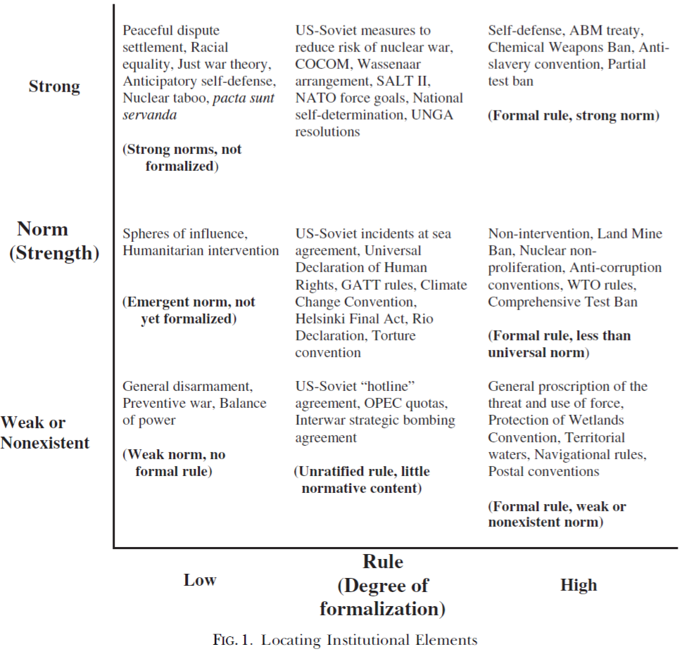
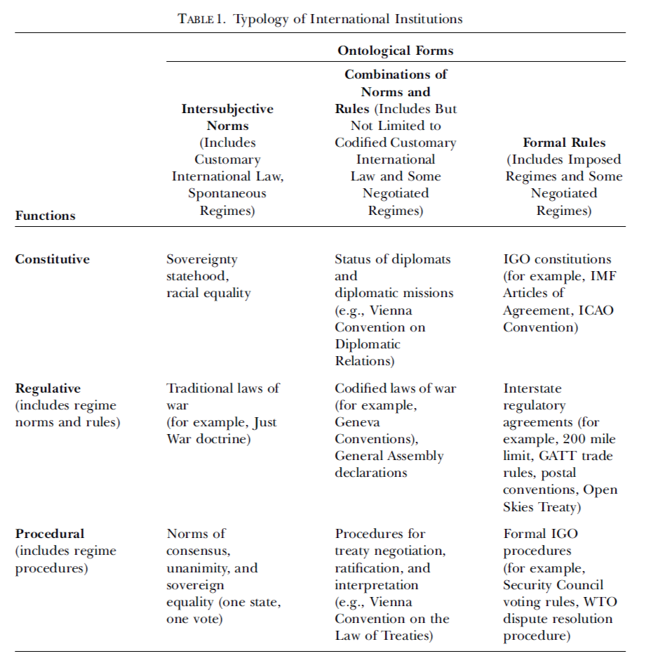
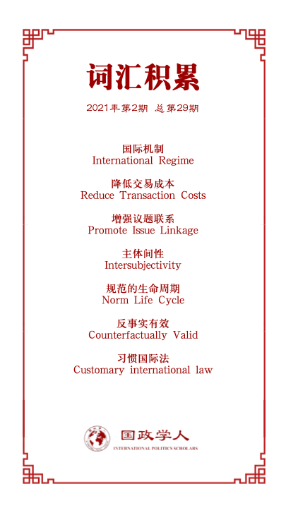

收录于合集

作品简介
【作者】 John Duffield,乔治亚州立大学政治学系教授
【编译】 黄慧彬（国政学人编译员，复旦大学国际关系与公共事务学院硕士研究生）
【校对】 徐一凡
【审核】 李博轩
【排版】 胡蝶
【美编】 李九阳
【来源】 Duffield, John. “What Are International Institutions?” International Studies Review , vol. 9, no. 1, 2007, pp. 1–22.
【归档】 《国际关系前沿》2021年第2期，总第29期。
期刊简介
《国际研究评论》（International Studies Review）创刊于1957年，原名为Mershon International Studies Review，于1999年更改为当前的刊名，卷编号从1重新开始。该期刊是由牛津大学出版社代表国际研究协会出版的同行评审学术期刊，以季刊形式发行。主编是Amanda Murdie。2018年影响因子（Impact Factor）为2.076。
**** 国际制度是什么？
What Are International Institutions?
John Duffield
内容提要
国际制度是国际关系研究及各国决策的核心关注之一，但学界文献对其却缺乏一个被广泛接受的定义。学者们各自使用互不重合的概念，致使文献碎片化、理论积累受阻。本文试图纠正这种情况。本文首先回顾了当前国际制度概念化的主要方式并指出其局限；然后提出一个包容性的概念，包含国际制度最重要的形式，同时不失分析的连贯性；最后讨论了使用这一新概念的益处。
文章导读
01
国际制度的现有意义
1.传统观念: 作为形式（formal）组织的制度
20世纪50、60年代，国际组织是制度研究的主要对象，组织=制度具有一定意义。但由于对其他国际制度形式的研究激增，这一定义不再适用。
2.早期社会学概念：作为实践的制度
20世纪70年代末和80年代初，国际关系学者尝试系统地对国际制度定义。奥兰·扬借用社会学的观点，认为“ 国际制度是管理国际社会成员活动的社会制度 。”这一定义具有开创性，但亦有局限，即夸大了组织和社会制度的区别；此外，这一概念过于宽泛，认为“甚至战争也是一种社会制度”；还有，将制度与行为联系起来存在逻辑谬误的风险。
3. 理性主义的概念：作为规则的制度
理性主义将制度视为一套或多或少形式的规则（formal rules）。 国际制度通过构建激励（incentives）和约束(constraints)的战略环境来影响行为体的行为及其结果。其中，行为体被工具动机驱动，并追求功利最大化。 理性主义区分了制度和行为，但也存在缺陷：其忽略了国际制度的诸重要类别。这可能是因为，规则是由那些将服从它们的行为体有意识地设计的，因此模糊了制度的主体间性（intersubjective）和道义性（deontic）特征；强调规则造成的行为后果转移了人们对制度赋予，甚至是创造特定权力和能力的方式的关注。
4.建构主义社会学概念:作为规范的制度
建构主义认为制度根本上是一种观念（ideational）现象，涉及特定集体成员共享的思想，强调主体间性。基欧汉认为，“ 制度往往不是人类有意识地创造出来的，而是通过一个不那么深思熟虑的过程慢慢出现的，而且经常被受其影响的人视为理所当然 ”。建构主义常使用的术语是“规范（norms）”。规范主要分为规制性规范（regulative norms）和构成性规范（constitutive norms）。这一概念强调了国际制度的主体间性和建构性方面，并区分了制度和实践。然而问题是，建构主义的概念忽视了国际制度通常具有的某些形式特征（formal features）。
02
关于国际制度的一个新定义
为使国际制度的定义全面但不过于宽泛，且便于区别和比较制度的具体形式，本文将国际制度定义为 事关国际体系、体系中的行为体（包括国家和非国家行为体）以及它们的行为的一系列相对稳定、相互联系的构成性、规制性和程序性的规范和规则。 以下将详细讨论定义的本体论和功能性的区别。
1.本体论的区别:主体间因素与形式因素
建构主义者用“规范”来表示主体间因素，理性主义者用“规则”来表示形式因素（formal elements）。
建构主义把制度看作是主体间性的规范。规范的一个特征是自发性， 且由于规范具有默认的协商一致性质而不能强加于人，但可以通过说服和社会化等过程来反复灌输规范。规范的 另一特征是道义性 ， 即国际制度对事情应该是怎样的或如何被解决有着共同的信念。规范带有“一种应该被遵守的感觉”，使得它们是反事实有效的（counterfactually valid）。 规范的强度存在差异， 主要由两个因素决定。 一个是社会系统中共享规范的成员比例， 或称为一致性（concordance）或共性（commonality）。 另一个是社会成员对规范的遵守程度。 有些规范可能不会施加什么义务感，而另一些则可能被成员深深地内化以至于被视为理所当然。
那么如何评估某一特定规范的共享程度或被遵守程度？ 学术界对此没有达成共识。规范之存在有许多非行为证据：调查、实验、访谈和参与式观察。规范必须不时地被表达出来，否则就不能被社会群体的成员所分享。因此，一些学者指出，有必要检验交流过程或话语以确定规范。然而，对这类证据的依赖有时会带来新挑战。例如，一种规范得到的支持越多，其存在的证据就越少。
此外，制度通常也有形式的因素（formal elements），即“规则”， 如《联合国宪章》。这一形式部分与规范相反，可以完全独立于制订规范的主体而存在。 规则的特征之一是不需要符合任何一方实际上偏好或认为应然的情况。 规则只关心事情是什么以及如何做，不需要有任何道义性内容，侵犯它们并不必然招致道德谴责。因此， 一项规则可以由一个行为体强加给其他行为体。 那些被强加于此规则的人可能觉得没有义务去遵守它，尽管他们可能会因为其他原因而遵守。 在强度上，规则可能表现出不同程度的形式性（formality）或形式化（formalization）。 规则可以通过口头协议或书面形式被制定。形式化的程度决定了规则的强度，特别是当它具有法律约束力时。
理性主义者和建构主义者在将制度规范和规则与行为区分开来的必要性上达成了共识， 根本原因在于制度与行为或实践的等式排除了用前者来解释后者的可能性。
在实践中，具体的制度要素可以表现为多种形式。而在二维的本体论空间中，在某一特定时刻确认任何特定制度的构成因素都应该是可能的（如图1）。

2. 功能性的区别
本文对国际制度之定义所包含的第二个重要区别涉及不同制度要素之功能。这些功能可以分为三类:构成功能、规制功能和程序功能。
（1）构成功能 。构成性规则和规范创造了从事某种行为的可能性。构成功能表现为：①规则和规范可以创造社会实体(行为体)，决定它们本身的能力和与行动有关的其他禀赋；②制度可以构建活动和行动类别。
（2）规制功能 。规则被定义为明确的行动指南或标准，而规范则是对适当行为的共同期望或标准。规制功能表现为：指令性的（prescriptive）、禁止性的（prohibitive）和容许性的（permissive）。还有一个重要区别涉及行为的主要规范和规则与旨在增加遵守可能性的次要或辅助规制要素，后者包括透明性规范和规则和参与者对违约情况的应对。
（3）程序功能 。程序功能与规制功能较为相似，可认为是后者的一个子集，不同之处在于规制规则和规范关注直接影响物质世界的行为，而程序功能则在制度之中管理行为体间的行为或是管理制度本身。特别是程序安排往往提供机制，使参与的行为体能够就制度所涉及问题领域中出现的问题做出集体选择。

03
新定义的潜在贡献
1.明确特定国际制度的性质
这一定义可以帮助学者们更清楚地了解作为研究对象的特定制度的性质，从而明确他们的研究和主张实际适用的现象范围。
2.改善现有的制度研究
这一定义有助于解决以下潜在问题：第一，在将国际制度视为因变量时，未能明确说明所有可能的结果；第二，在探讨国际制度的影响时，未能明确相关制度因果变量的全部范围，因此存在遗漏变量偏差的风险。第三,定义未能识别和区分不同的因果路径；第四,未能选择制度尽可能具有可比性的案例。
3.产生新的研究问题
首先是作为自变量的规制规范和规则与作为因变量的国际行为和结果之间的不同因果关系。 这一探讨能够促进人们对形式规则和主体间规范在塑造行为方面所起作用的不同制度进行更好地比较，其中学者们应关注主体间因素和形式因素之间可能存在的相互作用。 第二个有潜在价值的研究领域涉及国际制度所采取的基本形式。 例如，一些功能相似的制度为什么会采取非常不同的形式？一个相关的问题是制度的基本性质何时以及如何改变，形式规则在规范的发展过程中可能扮演什么角色，反之亦然。
04
结论
本文旨在通过阐述一个全面但有区别的对国际制度的定义来弥补学界缺乏统一定义的缺陷。该定义包含本体论和功能性的区别。作为一种分类法的基础，所有类型的国际制度都可以在其中定位。这一定义有望推动对国际制度的研究：明确国际制度研究的范围和限制，进一步关注制度形式的潜在变化，发展更全面的理论；同时，通过提出新的问题和激发有意义的比较来发展潜在的有价值的研究途径；最后，通过促进制度分化为本体论和功能性组成部分有助于加深对特定制度类型的理解。
译者评述
关于国际制度的研究历来都是国际关系研究的重要议程，而对于概念的定义则是研究开展的基础，但由于国际制度本身的模糊性以及现实发展所带来的诸多新特征，国际制度缺乏一个被学界广泛认可的定义。本文旨在解决这一问题，因此力图在梳理以往对国际制度的各种定义的基础上提出一个包容性较强的概念，使它们都能在这个定义中找到一席之地，为此作者还在统一的概念之下进行了两种区分：本体论上和功能上的，本体论的差异分为主体间性要素和形式要素，功能则分为构成性、规制性和程序性功能，但任何被认为是国际制度的规则或规范并不需要满足所有条件。作者的意图如此，使得国际关系三大理论（现实主义、自由主义和建构主义）的元素在这一新的定义中得到体现，映射了国际制度依托国际关系理论的研究发展历程；同时作者也区别了行为模式和国际制度，力图使该概念避免循环论证的逻辑风险和过于宽泛的无意义。
作者提出的新概念解决了国际制度的概念使用的一些混乱，但同时也存在着一些令人思考的地方。就国际制度的概念辨析而言，国际机制和国际组织与其如影随形，早前国内也有一些学者在做概念辨析时讨论过这一问题，有学者认为国际制度的概念范畴包括国际机制和国际组织，[1]也有学者认为国际制度与国际机制无论在词源上还是国际与国内两种环境当中都存在差异，国际组织也只是国际制度安排的产物，其本身不能等同于国际制度。[2]从作者的新概念中可以看出，国际组织作为国际体系中的行为体被纳入了国际制度的涵盖范畴，但是国际机制何处安放，作者并没有提及，然而这原本是定义国际制度绕不开的话题，尤其是作者在表现出力图涵盖大部分国际制度相关研究的研究“野心”后，更应该纳入考虑的一个问题。
此外，从概念本身而言，究竟是一个更为简约的概念更容易被接受，还是一个包容性强的概念更容易被接受，这是一个值得思考的问题，但同时对于这一问题不能做出极端化的判断。正如米尔斯海默所说，关于国际制度的定义有时过于宽泛，以至于包括了所有的国际关系，这使它在分析上几乎没有意义。[3]但他也表示设计出一个与大多数学者用法一致的概念是有可能的且有必要的，因此他给出了自己的定义：国际制度是一套规则，规定国家之间应该以何种方式进行合作与竞争。[4]就概念的简洁程度而言，米尔斯海默的概念则显得更为简洁，就概念所描述的内容而言，米尔斯海默指出了国际制度的本质——规定国家竞争与合作的方式，而作者则是描述性地指出国际制度所涵盖的要素、功能和主体，显得较为迂回但也更全面。这并不是说哪一种定义是国际制度研究中的最优选择，而是体现出不同的定义方式各有特点，这也表明国际制度得到统一定义之难。
当前，国际制度的定义似乎也没有达成广泛共识，而国际制度研究的发展依旧越发蓬勃，新旧制度主义的更替、从区域到全球的制度竞争等研究议程成为新兴的研究热潮，国际组织自身似乎也在寻找着独特的理论发展空间。由此可见，无论关于国际制度的概念之争是否能得到一个定论，国际制度的研究是时代之需，不会因此而停滞脚步。
参考文献
[1] 陈晓进：《国际制度的概念辨析》，载《国际观察》,2000年第6期，第6-10页。
[2] 苏长和：《重新定义国际制度》，载《欧洲》,1999年第6期，第22-27页。
[3] Mearsheimer, John J. “The False Promise of International Institutions.” International Security , vol. 19, no. 3, 1994, pp. 5–49.
[4]同上
词汇整理

文章观点不代表本平台观点，本平台评译分享的文章均出于专业学习之用, 不以任何盈利为目的，内容主要呈现对原文的介绍，原文内容请通过各高校购买的数据库自行下载。

好好学习，天天“在看”

国政学人
支持学术公益与知识传播
微信扫一扫赞赏作者 __赞赏
已喜欢，对作者说句悄悄话
取消 __
发送给作者
发送
最多40字，当前共字
上一页 1/3 下一页
长按二维码向我转账
支持学术公益与知识传播
受苹果公司新规定影响，微信 iOS 版的赞赏功能被关闭，可通过二维码转账支持公众号。